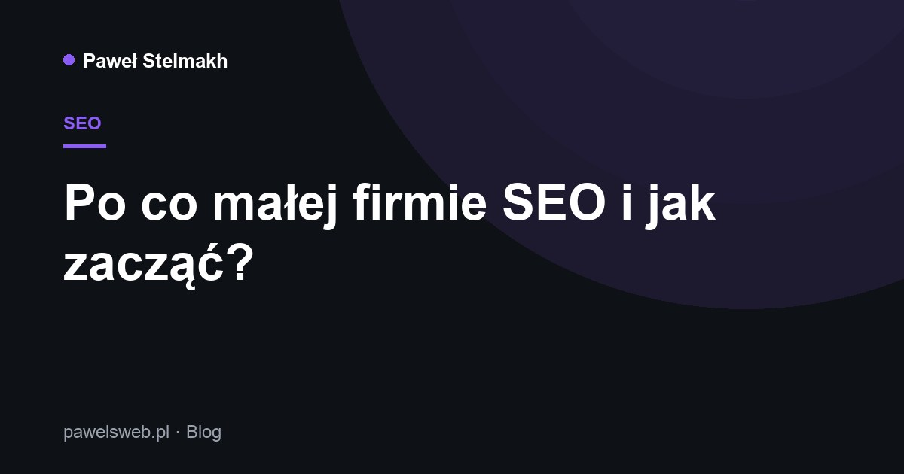

Po co małej firmie SEO i jak zacząć?

SEO to sprawianie, żeby Twoja strona pojawiała się wysoko w Google, gdy ktoś szuka Twoich usług. Dla małej firmy to jeden z najtańszych sposobów na stały dopływ klientów.
Czym właściwie jest SEO
SEO (optymalizacja pod wyszukiwarki) to zestaw działań, dzięki którym Google rozumie, czym się zajmujesz, i pokazuje Twoją stronę osobom, które tego szukają. Nie płacisz za każde kliknięcie jak w reklamie — ruch przychodzi „organicznie”.
Dlaczego to się opłaca
Klient, który sam wpisał „strony internetowe [miasto]” i trafił do Ciebie, jest już zainteresowany. Takie wejścia konwertują lepiej niż przypadkowe. A raz wypracowana pozycja pracuje na Ciebie miesiącami.
5 pierwszych kroków
- Podstawy techniczne — szybka, mobilna strona z poprawnymi tytułami i opisami (to robię przy każdej stronie).
- Wizytówka Google — skonfiguruj i zweryfikuj Profil Firmy; to fundament lokalnego SEO.
- Słowa kluczowe — wypisz frazy, których używają Twoi klienci, i użyj ich naturalnie w treści.
- Treść — dodawaj wartościowe teksty (np. odpowiedzi na pytania klientów) — tak jak ten artykuł.
- Linki i obecność — dodaj adres strony w social mediach, katalogach i wizytówkach.
Od czego zacząć u siebie
Zacznij od dwóch rzeczy: dobrze zoptymalizowanej strony i Wizytówki Google. To baza, na której budujesz resztę. Chętnie pomogę ustawić jedno i drugie.
Potrzebujesz strony lub SEO?
Napisz — odezwę się, doradzę najlepsze rozwiązanie i przygotuję bezpłatną wycenę.
Wypełnij formularz WhatsApp